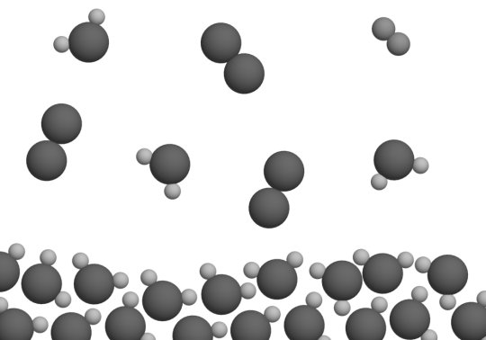
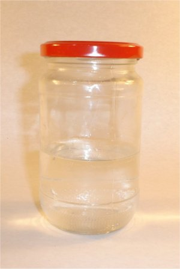
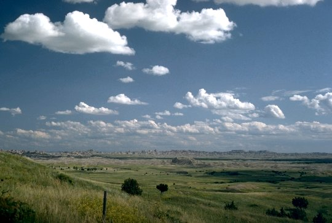

Provocarea 3−1
Provocarea 3−1
De miliarde de ani, undeva pe Pământ, plouă. De unde oare provine atâta apă? Şi de ce nu suntem acoperiţi de un strat din ce în ce mai adînc de apă?
Elemente de termodinamică. |
Transformări de stare de agregare |
F-3. |
Vaporizarea şi condensarea |
Provocarea 3−1
De miliarde de ani, undeva pe Pământ, plouă. De unde oare provine atâta apă? Şi de ce nu suntem acoperiţi de un strat din ce în ce mai adînc de apă?
La suprafaţa unui lichid (cum este apa) se întâmplă mereu câte ceva (figura 3−1).

Figura 3-1. Molecule la suprafaţa liberă a apei.
Moleculele apei lichide se atrag reciproc şi se menţin aproape unele de celelalte. Agitaţia termică le poartă însă de colo−colo. Din când în când, câte o moleculă aflată aproape de suprafaţa apei lichide este ciocnită mai energic de vecinele sale şi poate primi suficientă energie pentru a "evada" în spaţiul relativ liber de deasupra. Energia primită este utilizată pentru învingerea atracţiei la care este supusă din partea celorlalte molecule. Rând pe rând, moleculele părăsesc lichidul şi se alătură gazului de deasupra.
 Numim vaporizare transformarea din stare lichidă în stare
de vapori. Vaporizarea la suprafaţa lichidului este numită evaporare.
Numim vaporizare transformarea din stare lichidă în stare
de vapori. Vaporizarea la suprafaţa lichidului este numită evaporare.
În timpul vaporizării, părăsesc lichidul molecule dintre cele mai energice, astfel că energia cinetică medie a moleculelor rămase în lichid scade − lichidul se răceşte. Devenind mai rece, lichidul va prelua căldură de la corpurile mai calde.
Vaporizarea are loc cu absorţie de căldură.
Căldura provenită de la Soare provoacă evaporarea permanentă a apei. Astfel, deşi ploile aduc mereu apă, nu suntem acoperiţi sub un strat din ce în ce mai adânc de apă.
Provocarea 3−2
Apa dintr−un vas acoperit (figura 3−2) nu pare să se evapore − nivelul apei rămâne nemodificat zile în şir, în timp ce nivelul apei dintr−un vas descoperit scade. Ce se întâmplă oare?
|  | Figura 3-2. Apă într−un vas acoperit. |
Evoporarea are loc cu siguranţă şi în vasul acoperit − agitaţia termică este tot atât de intensă ca şi în vasul descoperit. În vasul acoperit, însă, vaporii se acumulează treptat deasupra lichidului (nu se pot răspândi în încăpere). Agitaţia termică îi poartă din când în când către lichid! Cu cât vor fi mai mulţi vapori deasupra lichidului, cu atât va fi mai mare rata de revenire a moleculelor în lichid.
Numim condensare transformarea din stare de vapori în stare
lichidă.
Când moleculele se reîntorc în lichid, forţele de atracţie din partea celorlalte molecule efectuează lucru mecanic şi măresc energia cinetică a moleculelor care se reîntorc în lichid. Prin ciocniri, creşte agitaţia termică şi se eliberează energie sub formă de căldură către corpurile mai reci.
Condensarea are loc cu degajare de căldură.
Astfel, se atinge la un moment dat un echilibru între rata de evaporare şi rata de condensare − vaporii devin saturanţi. De aici încolo, proporţia lichid−vapori rămâne neschimbată, chiar dacă în permanenţă molecule ies şi intră în lichid.
Mărind temperatura lichidului, rata de evaporare creşte şi echilibrul se va stabili la o presiune mai mare a vaporilor saturanţi.
Presiunea vaporilor saturanţi ai unei substanţe depinde doar
de temperatură.
Tabelul 3−1 prezintă presiunea vaporilor saturanţi ai apei la diferite temperaturi.
Tabelul 3-1. Presiunea vaporilor saturanţi ai apei, la diferite temperaturi.
Când vaporii de apă din atmosferă se răcesc, pot deveni suprasaturanţi şi condensează. Norii sunt alcătuiţi din
picături minuscule de apă lichidă purtate de curenţii de aer (figura 3−3).
 Când condiţiile devin favorabile, micile picături se contopesc, formând picături suficient de mari, care cad pe Pământ ca
precipitaţii.
Astfel, datorită Soarelui, se menţine de miliarde de ani un circuit al apei în natură, echilibrând rata evaporării şi
cea a condensării apei Pământului.
Temperatura
(K)Presiunea
vaporilor
saturanţi
(kPa)
273
0,61
293
2,33
313
7,34
333
19,8
353
47,3
373
101
393
198
Figura 3-3. Norii sunt alcătuiţi din
picături minuscule de apă lichidă.